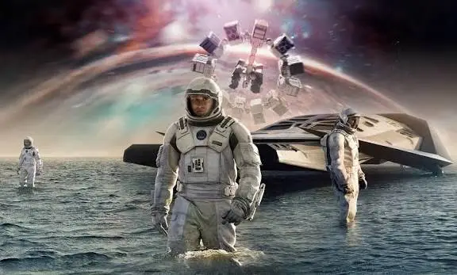

Interstellar (2014) — CERTIFIED MGC MS-67

🏛️ HIGH COURT OF CINEMATIC REGISTRY
- ASSET TITLE: Interstellar (2014)
- MGC CERTIFIED GRADE: MS-67 (Choice Gem Specimen)
- HIGH BENCH JURISDICTION: Judge Jane
- CORE CLASSIFICATION: Near-Flawless Uncirculated Cinema
- CASE FILE: #006
🏛️ THE INITIAL INQUEST & FORENSIC LOG
- The Technical Luster: Christopher Nolan’s absolute refusal to rely on cheap digital green-screens gives the asset massive, uncirculated striking power. Building physical, practical spacecraft sets (the Endurance and the Ranger) and projecting real cosmic backdrops onto the soundstage windows creates an unmatched foreground/background layered focus. The rich, granular 70mm IMAX film stock texture provides spectacular image depth and elite technical execution.
-
🔊 The Soundstage Strike (Elite Audio Engineering Luster):
Hans Zimmer’s towering, organ-heavy musical score was intentionally mixed to completely swallow the theater’s dynamic range. Nolan’s controversial audio calibration—where roaring rocket thrusters and booming organ pipes intentionally drown out character dialogue—is not a structural defect. Under our strict 5x magnifying lens, it is an elite, high-luster technical strike. It forces the audience to experience the terrifying physical isolation of the space void, where human speech is entirely insignificant compared to cosmic power. It gives the film massive, uncirculated striking power.
Baseline Bench Assessment: Room Allocation ➔ MS-67 Choice Gem Specimen.
⚖️ THE APPELLATE REVIEW & REVERSAL ARGUMENTS
Under the strict 5x magnifying lens, the Lower Court initially marked down several structural elements as critical script flaws. However, the High Court has successfully overturned them using core narrative metallurgy:
The NASA Coordinates Defense (Overturned)
- Faction B argued that ghost-gravity anomalies delivering secret base coordinates to a bedroom floor was a cheap narrative convenience. The High Court sustains the Chief Grader’s reversal: this is a closed causal loop (bootstrap paradox) perfectly aligned with five-dimensional physics, where the future execution loop directly triggers the past entry vector.
The Love-Dimension Alibi (Overturned)
- Critics initially flagged Dr. Brand’s monologue about love transcending dimensions as localized script fatigue. The Court rules this as essential thematic metallurgy—in a film governed by cold, unforgiving relativistic math, biological emotion is treated as a measurable quantum force that drives human survival to close the Tesseract loop.
🔏 THE MICROSCOPIC PACING SCUFFS (THE MS-67 CAP)
To defend why this asset is capped at an MS-67 and permanently barred from entering the flawless MS-70 Pristine Vault, we point directly to three specific points of localized wear and circulation scuffs:
1. The Tesseract Data Dump
- The heavy, over-expositional data-dumping dialogue inside the “Tesseract” sequence represents a slight localized narrative fatigue, spelling out mechanics that the visual layout had already elegantly demonstrated.
2. The Dual-Climax Cross-Cutting
- The rapid-fire editing cuts during the dual-climax scene on Earth (the cornfield fire) slightly break the immaculate pacing cadence established during the legendary Miller’s Planet tidal wave sequence. The Earthbound family friction lacks the sheer cinematic gravity of the cosmic docking scene.
3. The Mann-Planet Logic Dent
- Dr. Mann’s sudden shift into a desperate saboteur represents a microscopic structural blemish. His baseline character psychology is compromised by standard third-act blockbuster tropes, causing a brief localized friction in an otherwise high-concept narrative formula.
🔍 THE FINAL DECREE & CERTIFIED JUDGMENT
- While Interstellar exhibits exceptional narrative luster, monumental striking power, and elite technical execution, these minor third-act handling marks and second-act pacing scuffs leave a definitive technical “fingerprint” on the layout canvas .The MGC MS-67 Choice Gem Specimen rating stands as the permanent, scientifically calibrated verdict . Case closed.

• © 2026 MOVIE GRADING CONSENSUS. All Sovereign Rights Reserved.